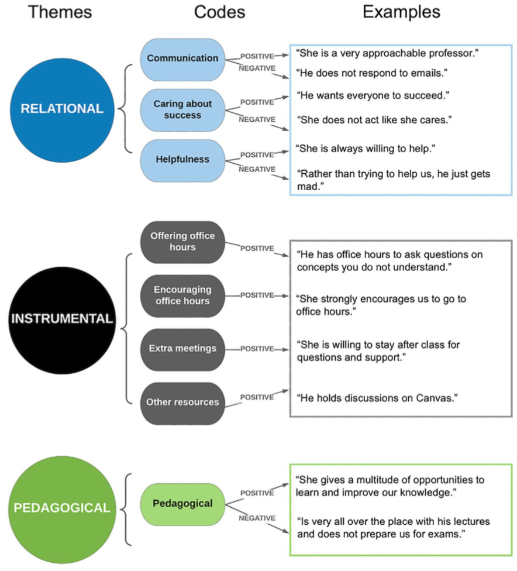

Student Perceptions of Instructor Supportiveness
Student perceptions of instructor supportiveness: what characteristics make a difference?
Schussler, E. E., Weatherton, M., Chen Musgrove, M. M., Brigati, J. R., & England, B. J. (2021). CBE—Life Sciences Education, 20(2), ar29.
What it says
- Although the authors set out to examine instructional practices that increased and decreased student anxiety, their results ultimately speak more broadly to what separates supportive instructors from unsupportive ones.
- They collected surveys from about 900 students across six biology classes. They then took a qualitative coding approach to identify common themes in how students described their instructors' supportiveness.
- In comparing the highly supportive instructors to the lower rated ones, the negative pedagogical code was the most divergent, with this code being nearly absent for the most supportive instructors and representing 30% of responses for the least supportive instructor.
- Interestingly, the instrumental code, which describes the "what" of instructor support rather than the how and why, did not correlate with the overall supportiveness of the instructor.

Examples of the themes and codes developed by the authors to classify student explanations of instructor supportiveness (modified from Figure 2 in Schussler et al.). Note that the instrumental theme was positive by definition, whereas the others could be either positive or negative.
What we might learn from it
- This is a small and preliminary study, but results suggest that instances of poor teaching---such as bad or indifferent efforts to explain concepts and answer questions---are more predictive of students overall feeling of instructor support than the specific methods of support offered or an instructor's personality.
- Although content-related communication is very important, the work also resonates with recent work on (non-content) instructor talk and highlights the importance of the non-content dimensions of what instructors do and say.